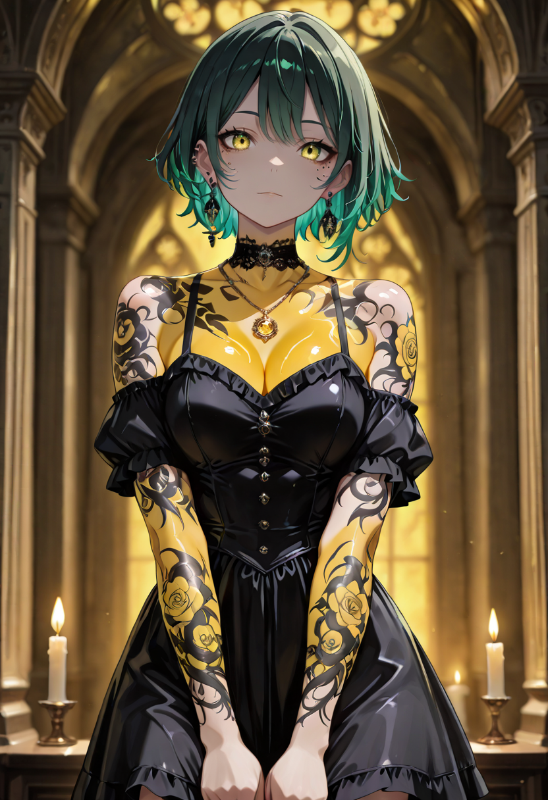
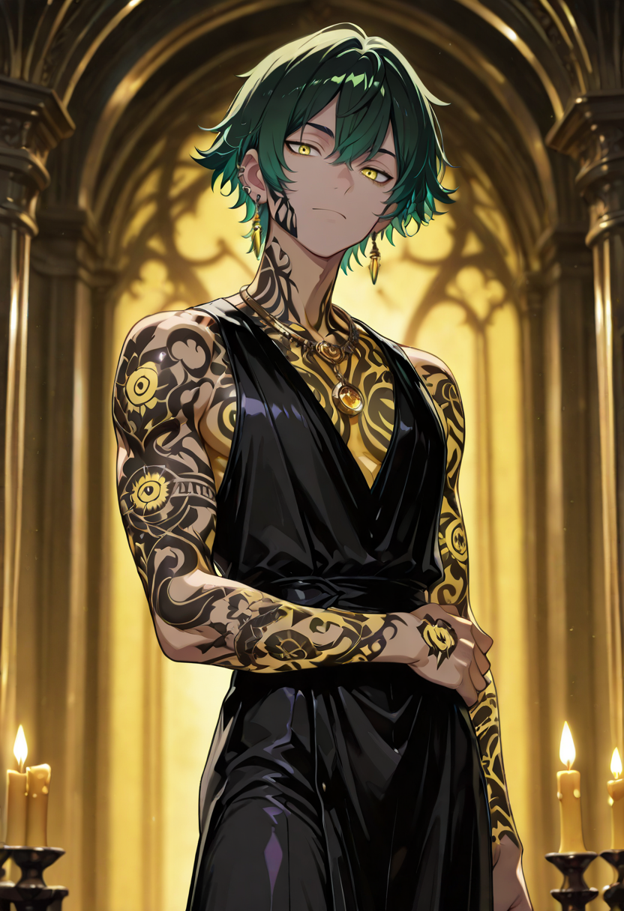

Untouchable By Design
A Vestal is not trained to be clean , they are trained to maintain the boundary between the clean and the contaminated. Their entire existence is the management of that border in a world where the border is increasingly difficult to find. Poison, disease, curse, madness , the Vestal identifies each and removes it with the same expression a surgeon wears: focused, unsurprised, unremarkable.
They are the Linfa branch's answer to large-scale status manipulation. While most units of the Empire can sustain through damage, the Vestal's value lies in preventing the secondary collapse , the fear that follows injury, the paralysis that follows pain. She does not fix what is broken. She prevents fragmentation.
In form, she appears as a luminous figure robed in sap-soaked wrappings that continuously dissolve and reform. Each strip of cloth carries absorbed toxins , you can tell how hard the battle is by how dark they turn. By the end of a major engagement, the Vestal is almost entirely black. And she is still standing.
Tactical Data
Sacred Remedy
BasePurification
ActiveLiving Ward
PassiveGallery